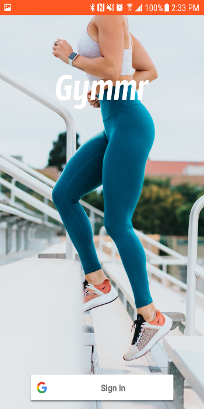
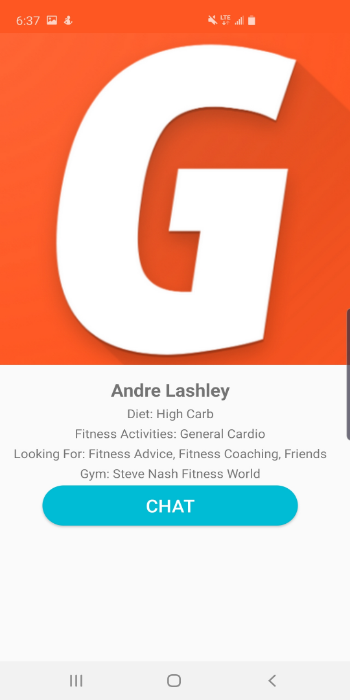
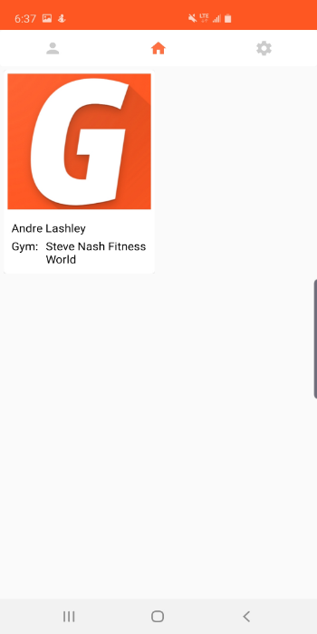

Gymmr
A Social Network for Any Gym
Gymmr lets you chat with fellow gym-goers and match based on your fitness and diet goals. You can use the app to find new friends, a personal trainer, or just to exchange diet and fitness-related information.

GymmrContact Us